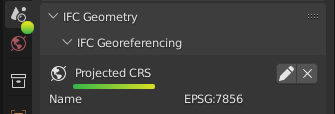
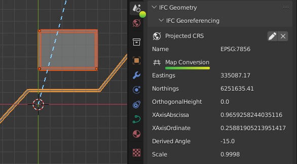
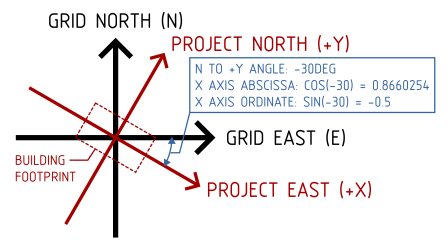
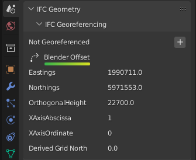
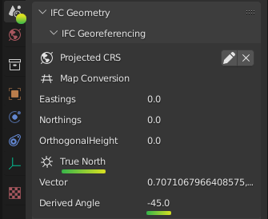

Georeferencing¶
There are two types of construction: vertical construction (such as buildings and sites) which deal with small distances typically under 1km, and horizontal construction (such as transport, transmission, and subterranean networks) where distances frequently exceed 1km. Blender and Bonsai focuses on vertical construction, and will typically just work out of the box.
Coordinate reference systems¶
The minimum requirement for a georeferenced model is to specify the coordinate reference system used. This is known as the Projected CRS, and is a feature available in IFC4 onwards.
Warning
IFC2X3 models cannot be georeferenced. There is a proposed convention to provide fallback support but this is not supported yet in any known vendor. Please consider upgrading to IFC4.
Most architects and engineers will know the name of the Projected CRS typically chosen by the surveyor. For example in Sydney, Australia, you might use GDA2020 / MGA Zone 56. In IFC a standardised code from the EPSG public registry is used to refer to the Projected CRS. For example, GDA 2020 / MGA Zone 56 will be named EPSG:7856.
You can check whether or not your model is georeferenced in the IFC Georeferencing panel in the Scene Properties tab. You should see a section for the Projected CRS with an EPSG code.
If you do not see this, your project is not georeferenced.
Note
Even if a model has large “real world coordinates”, this does not mean the project is georeferenced. Without a Projected CRS, these coordinates are meaningless.
Map conversions¶
The coordinates for the nominated Projected CRS are known as Map Coordinates. These Map Coordinates are typically large numbers and read as Eastings and Northings.
In vertical construction, some disciplines (such as a civil engineer or surveyor) will directly use Map Coordinates in their designs. Most others, such as the architect, structural, and service engineers will instead use Local engineering coordinates. A Map Conversion stores the parameters for transforming Local engineering coordinates to Map Coordinates.
For example, a civil engineer will work directly in Map Coordinates. This means that the model’s coordinates correlate directly to Eastings and Northings. Similarly, the model’s +Y axis will point to Grid North. As there is no Map Conversion involved, you will see a 0 in the Eastings, Northings, and Orthogonal Height in the IFC Georeferencing panel.

When Local engineering coordinates are used, typically the architect will nominate a local origin and model geometry will be drawn orthogonally (i.e. along the X and Y axis). This local origin often correlates with a site boundary, surveyed point, or grid intersection. This means that the model’s coordinates are typically smaller numbers and correlate to surface distance measurements, not Eastings and Northings, and the model’s +Y axis will point to Project North. The surveyor will then provide the necessary Map Conversion parameters to convert from Local engineering coordinates to Eastings, Northings, Orthogonal Height, and Grid North.
Warning
Coordinate systems are a technical topic. A common error is that disciplines may choose to use Map Coordinates without realising that map distances do not correlate with surface distances measured on the ground. Unless you are trained to work in Map Coordinates, it is safer to work with local engineering coordinates and consult your surveyor for professional guidance.
Map Conversions contain six parameters.
Eastings, Northings and Orthogonal Height parameters define the translation from the model’s XYZ coordinates to map Eastings, Northings, and Heights. Your model’s local engineering origin at 0, 0, 0, will always convert exactly to the Easting, Northing, and Orthogonal Height displayed in this panel.
The X Axis Abcissa and X Axis Ordinate define the rotation vector from Project North to Grid North. These two numbers combine into a coordinate vector pointing along the X axis (i.e. Project East). The default is an abscissa of 1 and ordinate of 0. This default (1, 0) vector implies Project East and Grid East coalign, which means there is no rotation between Project North and Grid North.
Tip
To save you the mental struggle of converting to degrees, a calculated rotation is always just below these values. Phew!
The distance measured on site, or the “surface distance” is actually not the same as the distance measured between Eastings and Northings. This difference is provided by the Scale parameter. The Scale defines the average combined scale factor across the small 1km site that converts from the model’s surface distances to map grid distances. Note that the Scale is actually not a constant. However, for the small sites dealt with in vertical construction, it may be approximated to be a constant by your surveyor and will typically be a value close to, but not exactly 1.
Note
Always check that the surveyor provides a scale factor such that surface distance multiplied by Scale equals map grid distances (as opposed to the other way around).
Working with Map Coordinates¶
Bonsai is designed to work with small coordinates (under 1km), whereas map coordinates are typically large. When you load an IFC which uses map coordinates directly, or when you are working with IFC2X3 and you cannot use a map conversion, Bonsai will autodetect a point on your model to use as a false origin.
The XYZ offset used for the false origin will be shown in the IFC Georeferencing panel under the Blender Offset header. It is very similar to a Map Conversion, but it will not have a scale and only temporarily affects your Blender session.
Note
A Blender offset is simply a shift in coordinates to reduce large model coordinates to smaller coordinates. It should not be used as an indicator of whether georeferencing is done correctly. Always check the Projected CRS, Map Conversion and confirm the parameters with your surveyor.
This distance limit of 1km and autodetected false origin may not be appropriate for your project. For example, your project may exceed the 1km limit, or you may want to federate multiple files together and manually specify a consistent and fixed false origin. You can customise these options by choosing Enable Advanced Mode when loading a project. Then, set the Distance Limit (in meters) and the False Origin coordinate before pressing Load Project Elements.

When a false origin is used, there are two possible methods to offset objects by the false origin.
The first method is to offset the origin point of objects. We call this the Object Placement method. The second method is to offset the local coordinates of geometry within the objects themselves. We call this the Cartesian Point method. Sometimes, BIM applications combine both of these methods in a single IFC project. To see which workaround was used on an object, check the “Blender Offset” property in the Transform panel in the Object Properties. This is an advanced property used by powerusers to debug coordinate issues and may be safely ignored by most users.

Incorrect coordinate use¶
Sometimes, a model may mix Map Coordinates and Local engineering coordinates. For example, a surveyed pipe may have its placement use Map Coordinates with large Eastings and Northings. However, the placement of the site object may be still set at 0, 0, 0. Since this range of coordinates exceed the default 1km distance limit, this creates a problem. Blender needs to choose between displaying the pipe accurately and sacrificing precision at the site placement, or vice versa, but it is impossible to satisfy both simultaneously in the same Blender session.
Warning
Many IFC viewers only show geometry, and don’t show object placements. This may give users the false impression that their coordinates in their IFC project do not have such a large range. However, as a native IFC authoring platform, Bonsai will not accept this inconsistency.
At this point, it is the users responsibility to reconcile this inconsistency in their coordinates. Either the user needs to fix their file to consistently offset all coordinates, or the user needs to manually tell Bonsai the coordinates of the desired false origin and accept the precision loss.
Converting local and map coordinates¶
You can convert Local engineering coordinates to Map coordinates and
vice versa in the Viewport panel. First, enable View > Sidebar then type
in your coordinate in the Input field. Press either the Local to Global
or Global to Local button to convert the coordinate. You will see the result
of the calculation in the Output field.
True north¶
When Local engineering coordinates are used, the model’s +Y axis points to Project North for the convenience of drafting. When Map Coordinates are used, the model’s +Y axis points to Grid North for the necessity of surveying.
Project North and Grid North is different to True North. The angle to True North is not a fixed angle. It will actually vary depending on the Eastings and Northings you choose to calculate it from.
However, this variable True North is a great source of confusion to architects, who typically just want to do a shadow study, solar study, or similar and go out for an early lunch. IFC can store a fixed True North value as a reference to be used for these types of usecases. If one is stored in your project, you may see it under the True North section of the IFC Georeferencing panel. Your surveyor will be able to provide the True North vector, but it should be only used as a reference, never used as a way to coordinate model rotations, and always with the understanding that it is not a fixed value.
Warning
Fun fact: Magnetic North is useless for the purposes of construction.
Coordinate precision limits¶
Bonsai focuses on vertical construction. Vertical construction typically uses Local engineering coordinates on a small site. The buildingSMART georeferencing technical experts panel have determined that a small site under 1km square can be assumed to have a constant Map Conversion.
Therefore, if your model is less than 1km square, you are within the coordinate precision limits. This is where the 1km default distance limit is derived from.
If you want to exceed the 1km square surveying limitation, you will need to be aware of software limitations that can result in precision loss when large coordinate ranges are used.
Blender, and subsequently Bonsai, is not designed for Map Coordinates. Blender internally uses single precision floating point calculations. A full description of the precision implications are described in the Blender working limits documentation.
This means that lengths greater than 5,000 meters start to accumulate software precision errors that affect the nearest millimeter. Therefore, from a software perspective, it is unwise to embark on a project with coordinates ranging greater than +/- 5km.